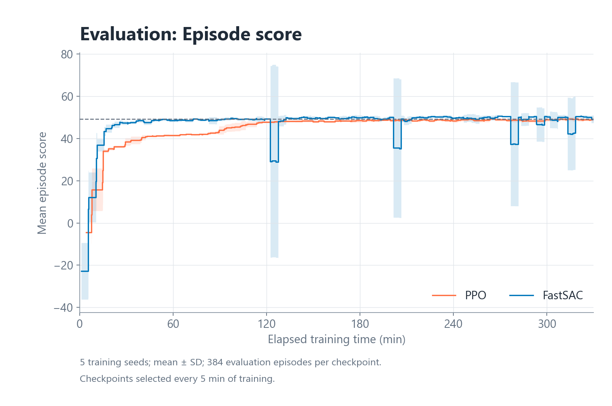
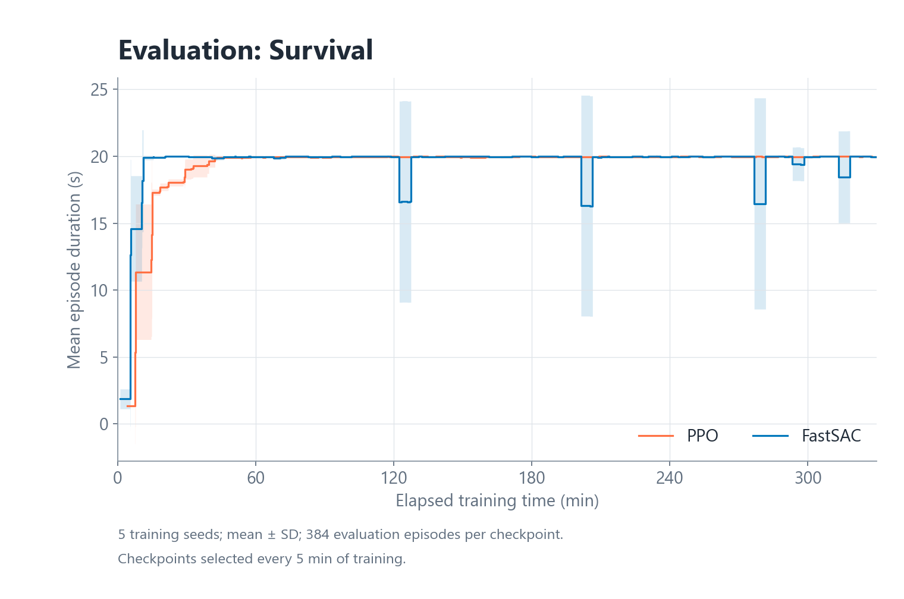

SELECTED PROJECT · 2026
AI Sapiens K1: Humanoid Locomotion Learning
Isaac Lab / Cyclo Lab · Simulation study
From human walking models to humanoid locomotion
My master's research combined a human walking model and a wearable robot in a shared learning environment, followed by deployment of the robot policy to real hardware. This project extended that experience to the AI Sapiens K1 humanoid and explored how an off-policy learning method performs in a new robot and simulator.
I used the PPO baseline in ROBOTIS Cyclo Lab and adapted FastSAC to the same locomotion task. The K1 work reported here was conducted in simulation.
My contributions
- Ran the Cyclo Lab PPO baseline and adapted FastSAC to the same K1 robot, observations, actions, rewards, and environment settings.
- Trained PPO to the example configuration's 10,000 iterations. Compared five training seeds per method over a common 330-minute interval, separating checkpoint selection from held-out testing.
- Reduced the time to reach the common evaluation target of 49.2007 by 72.8%: PPO 211.8 min versus FastSAC 57.5 min, averaged across five training seeds. The target is PPO's mean evaluation episode score at the end of the 330-minute comparison interval, averaged across its five seeds.
- Reduced mean planar velocity tracking RMSE by 20.5% in held-out flat-ground simulation tests, selecting each model by the highest mean evaluation episode score across the full 330-minute comparison interval at five-minute intervals.
Training and evaluation
Both methods used the same K1 model and task settings, with five training seeds per method. PPO completed the example configuration's 10,000 training iterations. We compared the two methods over a common 330-minute interval, with elapsed time including initialization, logging, and checkpoint saving.
For each run, checkpoints were evaluated at five-minute intervals throughout the full 330-minute comparison interval under identical evaluation conditions. The checkpoint with the highest mean evaluation episode score was selected per training seed. The selected policies were then tested with separate evaluation seeds and matched initial states: eight commands, sixteen initial states, and three evaluation seeds, for 384 episodes per policy.
Evaluation used deterministic policies with frozen observation normalization. These are flat-ground simulation results without external pushes; rough-terrain and K1 hardware transfer were not evaluated.
Time to reach the common evaluation target
The common target is 49.2007: PPO's mean evaluation episode score at the end of the 330-minute comparison interval, averaged across its five training seeds. Off-policy FastSAC reached this same target in 72.8% less training time.
| Common evaluation target | PPO | FastSAC |
|---|---|---|
| First reach of mean episode score 49.2007 | 211.8 ± 40.1 min | 57.5 ± 8.4 min |
Checkpoints were selected every five minutes of training using the latest saved checkpoint available at each evaluation time. Each policy was evaluated with eight commands, sixteen initial states per command, and three evaluation seeds, for 384 episodes. We calculated the first-reach time for each training seed and then averaged the five times. All five seeds of both methods reached the target.


Curves show mean ± SD across five training seeds. The dashed score line marks the shared target. Per-seed results
Held-out test results
FastSAC reduced mean planar velocity tracking RMSE by 20.5% relative to PPO over the same training-time comparison interval.
| Metric | PPO | FastSAC |
|---|---|---|
| Planar velocity RMSE (m/s) | 0.1013 ± 0.0097 | 0.0805 ± 0.0044 |
| Yaw-rate RMSE (rad/s) | 0.0974 ± 0.0144 | 0.0960 ± 0.0068 |
| Mean episode score (score) | 49.7223 ± 0.4482 | 50.9187 ± 0.1278 |
| Mean episode duration (s) | 19.9418 ± 0.0400 | 19.9903 ± 0.0217 |
Selected checkpoints and per-seed test results
Tracking RMSE excludes the first two seconds and uses observations until episode termination. 5 PPO and 1 FastSAC episodes ended before the tracking window and were excluded from RMSE. These measurements describe the tested simulation conditions, not general hardware performance.
Training progress at 15, 70 and 120 min
PPO vs. off-policy FastSAC at 15, 70 and 120 min
Project foundations
ROBOTIS Cyclo Lab provided the K1 simulation task and PPO baseline. The off-policy adaptation was informed by Learning Sim-to-Real Humanoid Locomotion in 15 Minutes (FastSAC). This project applies the method to K1 under the conditions described above.